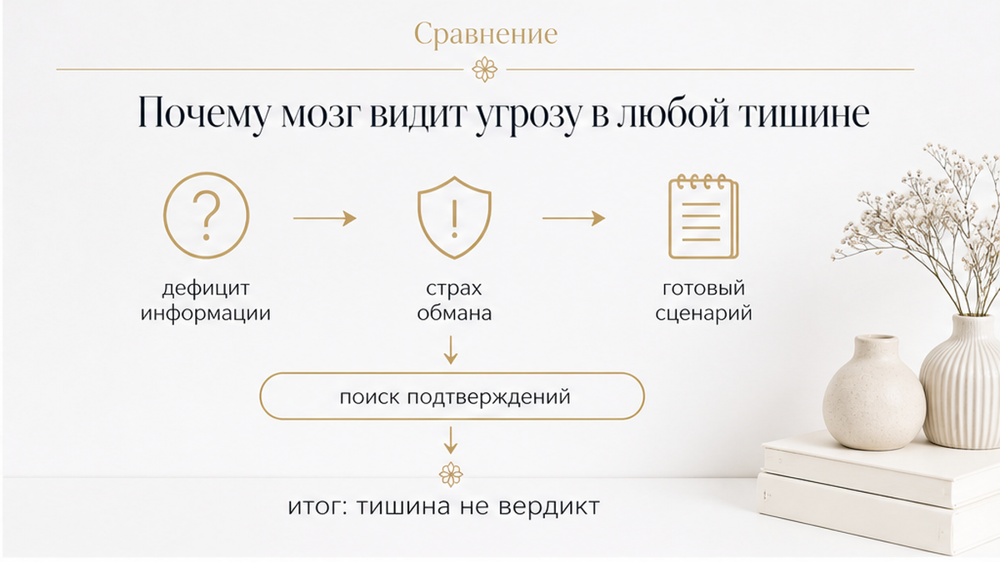
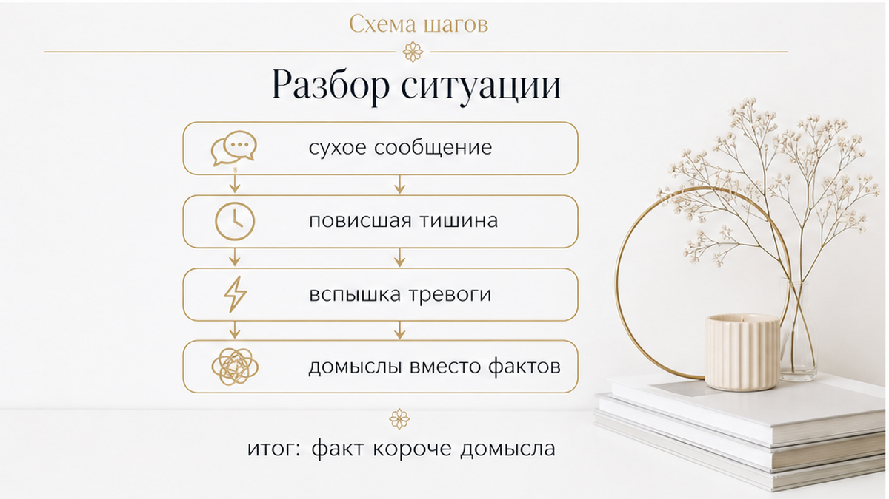
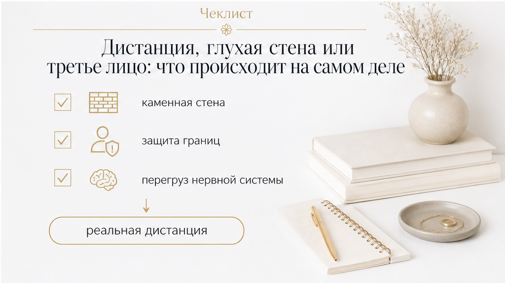

Конкретный пример. Воскресенье, 15:45: ты пишешь ему про встречу. В 16:00 прочитано, ответа нет. В 16:20 сухое «Не получится, занят», к 16:30 в голове уже другая. Это разбор ситуации по минутам, не приговор. Сухое «ок» и пауза — данные о дистанции, не доказательство измены.
Когда между вами вырастает холод, интуиция безошибочно ловит сам сдвиг: человек закрывается, меньше делится новостями и делает шаг назад. Но в состоянии острой тревоги интуиция не может точно назвать причину — она автоматически вешает самый болезненный и понятный ярлык: «у него появилась другая». Ты начинаешь воевать с фантомом, которого может не существовать в природе, и своими руками разрушаешь контакт ещё сильнее.
Сразу к делу: если повисшая тишина изматывает и ты уже накрутила себя до предела, раздели реальные факты и свои догадки с помощью карт. Не пытайся угадать чужие мысли — посмотри на реальную динамику между вами. Ты можешь задать картам три точных вопроса:
Сделать это можно двумя путями: открой 3 бесплатных расклада в боте (быстрый триплет или крест на ситуацию) или выбери расклад «Суть – Тень – Вектор» с аудиоразбором в приложении ВКонтакте (также доступен в приложении MAX), чтобы увидеть скрытые мотивы и вектор развития отношений без иллюзий.

В психологии близких отношений это называют турбулентностью при дефиците информации — этот феномен подробно описали исследователи Дениз Соломон и Лиэнн Ноблох. Когда в паре копится неопределённость, способность трезво оценивать поведение партнёра резко падает. Любая недосказанность поляризует восприятие: мозг не выдерживает пустоты и спешит заполнить информационный вакуум готовой драмой. Измена — самый болезненный, но при этом самый удобный шаблон. Он мгновенно объясняет всё: от медленных ответов до усталого взгляда.
Когда ты заранее уверена, что пауза вызвана романом на стороне, любое его действие работает как подтверждение твоей догадки. Задержался на работе — значит, с ней. Отложил телефон экраном вниз — прячет чаты. Ответил без смайлика — остыл из-за соперницы. Это классическая ловушка предвзятости подтверждения: ты видишь только то, что укладывается в подозрение, полностью отбрасывая усталость, проблемы на работе или внутренний кризис мужчины.

Разберём, как именно рождается это искажение, на простом поминутном примере.
Вот конкретный пример того, как развивается внутренний конфликт в обычный выходной день:
В этой точке происходит опасная подмена: объективный факт (лаконичный ответ и нежелание общаться прямо сейчас) подменяется домыслом о предательстве. Если написать ему из этого состояния с претензией или обвинением, конфликт вспыхнет на ровном месте.

Поведенческая модель «требование — уход» (demand–withdraw), открытая исследователями Эндрю Кристенсеном и Кристофером Хэви, наглядно объясняет эту ловушку. Когда одна сторона начинает давить, требуя немедленной близости, разъяснений и гарантий, вторая сторона инстинктивно пятится и закрывается, защищая границы. Чем настойчивее ты выбиваешь доказательства верности и прозрачности, тем глубже мужчина уходит в глухую оборону.
В моменты эмоционального перегруза многие мужчины включают защиту, которую психолог Джон Готтман назвал «каменной стеной» (stonewalling). Человек физически или эмоционально отключается от разговора, делает вид, что погружён в дела, или отвечает односложно не потому, что завёл интрижку, а потому, что его нервная система перегружена. Попытка пробить эту стену допросами и подозрениями приводит лишь к тому, что стена становится только толще.
Интуиция может быть абсолютно права в том, что между вами возникло напряжение и выросла дистанция. Но называть эту дистанцию изменой без твёрдых фактов — значит совершать ошибку, которая выбивает у тебя почву из-под ног.
Когда ты приходишь к картам в состоянии острой тревоги, главное — не поддаться искушению искать подтверждение своим худшим страхам. Таро не создано для того, чтобы подглядывать в чужую черепную коробку или выносить приговоры без контекста. Задача карт — показать скрытую динамику отношений, подсветить слепые зоны и вернуть тебе спокойствие и опору.
Вместо разрушительного вопроса «Докажите, что у него другая» важно разобрать три реальных слоя ситуации:
Такой подход снимает панику и возвращает контроль над собственной жизнью. Ты перестаёшь быть заложницей чужого молчания и начинаешь видеть ясную картину происходящего.
Верни себе ясность и спокойствие: если пауза в общении выбивает почву из-под ног, не оставайся наедине с навязчивыми подозрениями. Получи объективный взгляд на ситуацию без драмы и домыслов.
Запусти 3 бесплатных расклада в боте, чтобы быстро прояснить текущее положение дел, или открой глубокий аудиоразбор «Суть – Тень – Вектор» в приложении ВКонтакте (или в приложении MAX), чтобы разобраться в скрытых причинах дистанции и понять, куда двигаться дальше.